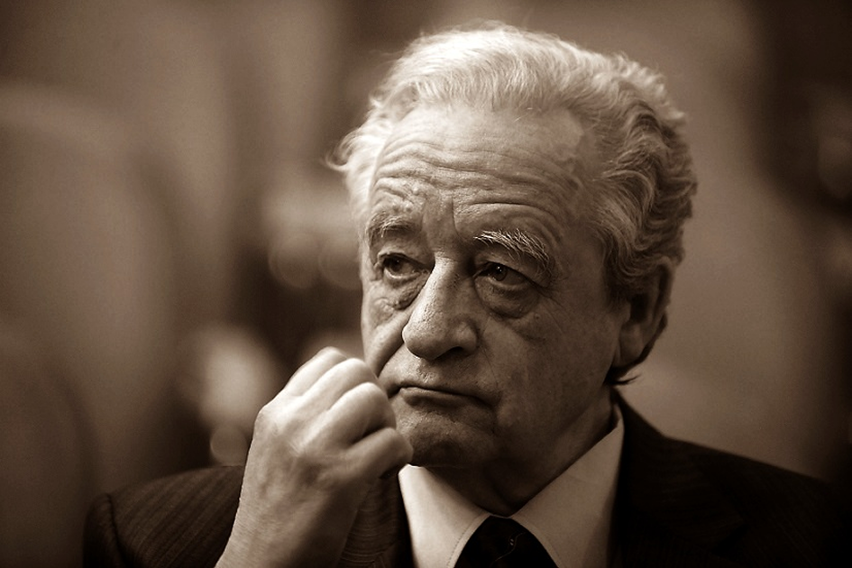
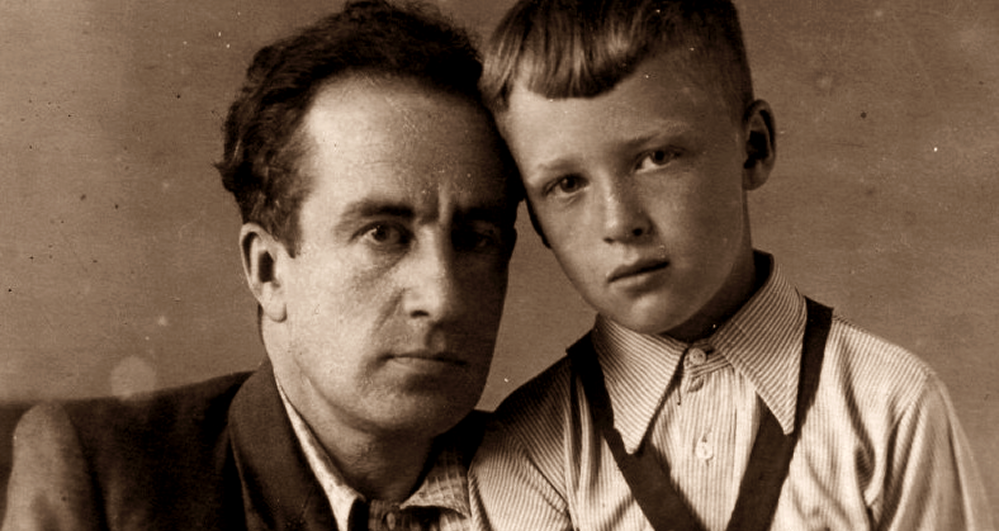
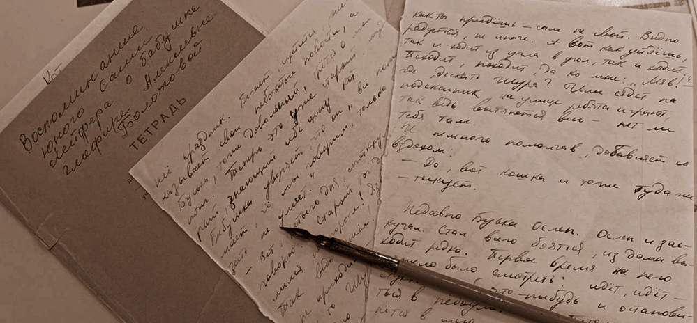
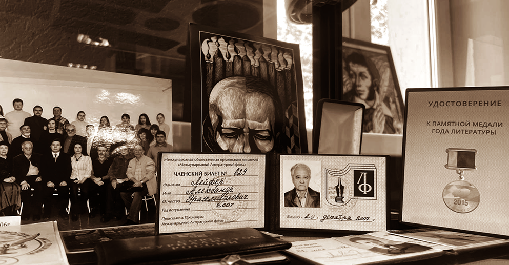

Виртуальная экскурсия по Кабинету писателя (А. Лейфер)
Александр Эрахмиэлович Лейфер (1943 - 2017) - коренной омич. Родился 27 декабря 1943 года. Журналист, председатель Омского отделения Союза российских писателей (1993 - 2017), Заслуженный работник Культуры РФ
Кабинет писателя
с 2021 года библиотека получила название в честь великого омского журналиста Адександра Эрахмиэловича Лейфера. На столетие библиотеки была создана экспозиция, напоминающая рабочий кабинет великого человека. Экспозиция - гармоничное сочетание условного и настоящего. Часы на стене вправде идут. Этажерка современных очертаний, но полна подлинных предметов. Стул действительно из 70-80 годов прошлого века. На столе оргстекло, под которое так удобно было класть заметки и фотографии. Также представлены и личные вещи писателя.
Семья и детство
Мать
Зинаида Васильевна Болтова-Лейфер (1908-1975) Закончила знаменитый Худпром - Омский художественно-промышленный техникум им. Врубеля, получила специальность художника текстильной промышленности. Но первое время, она работала на различных предприятиях легкой промышленности (номировщицей). А перед войной её приглашают преподавать рисование в Омское казахское училище, где она и познакомилась с Эрахмиэлием Яковлевичем Лейфером.
Отец
Отец А.Лейфера (1911–1995) – окончил лесохимический техникум в Бийске, после чего поступил на химический факультет Ленинградского университета. Однако перевёлся в Омский педагогический институт, так как одному было тяжело учиться вдали от дома. После окончания института он сначала преподавал в школе, а затем стал завучем Казахского педучилища, где вёл физику. В 1958 году, сразу после учреждения звания заслуженного учителя, получил награду одних из первых в Омске. В начале 1960-х годов, при создании музыкально-педагогическое училище, отца, как музыканта-любителя, назначили его завучем, и там он проработал до пенсии.
Детство и юность

Сохранилась тетрадь с воспоминания юного Саши Лейфера о бабушке.
Цитата:
«Бабушка очень меня любит. Но не в её привычках ежеминутно показывать свои чувства. Она делает это
иначе:
– Ты, знаешь, Шура, Буська (кот), как ты придёшь – сам не свой. Видно радуется, не иначе.
А вот как уйдёшь, так и ходит из угла в угол, так и ходит. Походит, походит, да ко мне: «Мяв!» –
где, дескать, Шура? Или сядет на подоконник, на улице ребята играют, так ведь вытянется весь – нет
ли тебя там.
И, немного помолчав, добавляет со вздохом:
– Да, вот ведь кошка, и тоже туда же – тоскует».
С детства в Александре чевствовалось стремление к профессии журналиста. На фотографии домашняя газета “Мой голос №2”, выпущенная им в 1 классе с настоящими рубриками ("Читал сам", "Что я умею") А умел он немало: и игрушки сделал, наклеивал картинки, штопал чулок. Прекрасные, детские, наивные события.
Достижения
В 1962 году, Александр Лейфер получил военный билет, что стало символом взросления. Интерес к литературе, сформированный под влиянием домашней библиотеки и "хрущевской оттепели", привёл его к решению поступить на отделение журналистики Казанского университета. Во время учёбы он активно сотрудничал с местными газетами. Проходил практику в "Омской правде", где вместе с женой Галиной получил предложение о работе после окончания университета. В 1967 году, получив диплом журналиста и трудовую книжку, Лейфер начал работать в "Омской правде" младшим литсотрудником, а затем перешёл в отдел культуры.
Александр Лейфер был удостоен звания "Заслуженный работник культуры РФ" (2007) и его имя занесено в Книгу почета деятелей культуры города Омска. В 2011 году он получил Почетную грамоту Министерства культуры РФ, медаль "За вклад в развитие омского краеведения" и статуэтку "Признание года". В 2015 году ему вручили медаль "За особый вклад в книжное дело". Лучшей наградой стала память о нём: в 2018 году вышел сборник воспоминаний "Хочу хоть минуты покоя. Всё было – бои и пиры…" с QR-кодом, ведущим в "Омскую электронную библиотеку" с его работами. Многочисленные награды свидетельствуют о вкладе Александра Лейфера в культуру Омска и Сибири. Он был не только причастен к культурной жизни, но и стал основателем и организатором. Лейфер был одним из инициаторов создания Литературного музея им. Ф.М. Достоевского и первым заведующим литературным отделом. С 1993 года он возглавлял Омское отделение Союза российских писателей, где сплотил вокруг себя творческих людей, пользовался авторитетом и поддерживал коллег. Благодаря его усилиям в 1997 году была учреждена молодежная литературная премия им. Ф.М. Достоевского. Лейфер также был одним из инициаторов создания альманаха «Складчина» и его редактором более 20 лет. Он писал книги о людях, связанных с Омском, сочетая документальность и художественный вымысел. Его труд был отмечен премией Администрации Омской области за книгу «Вокруг Достоевского и другие очерки» (1997).
Несколько фотографий с работы